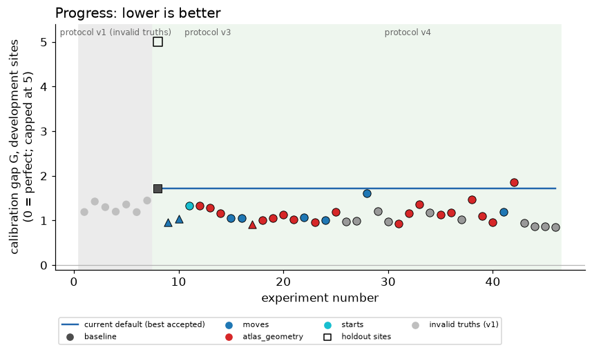
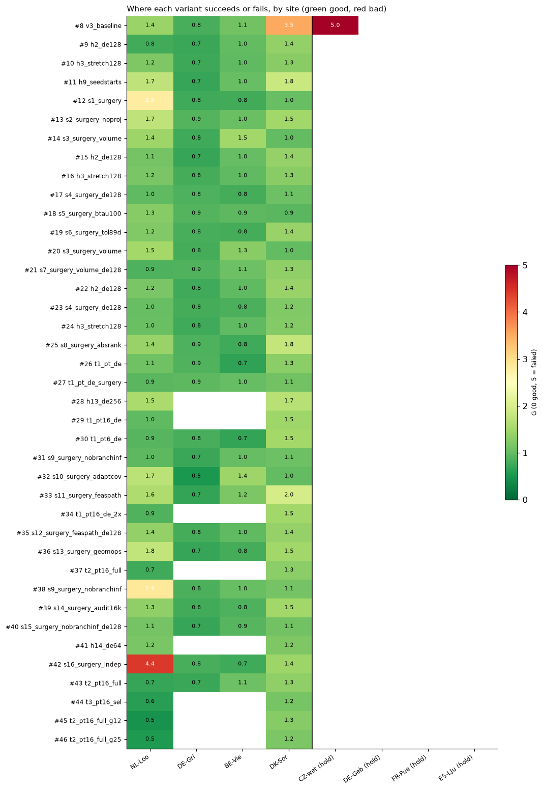
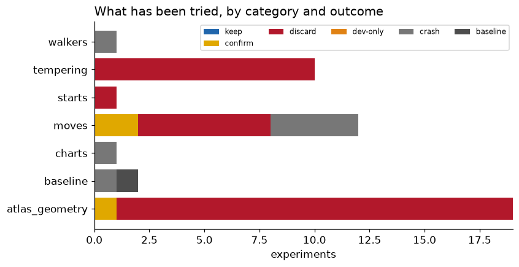
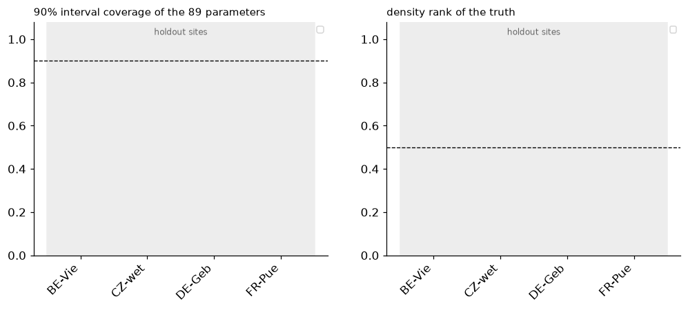
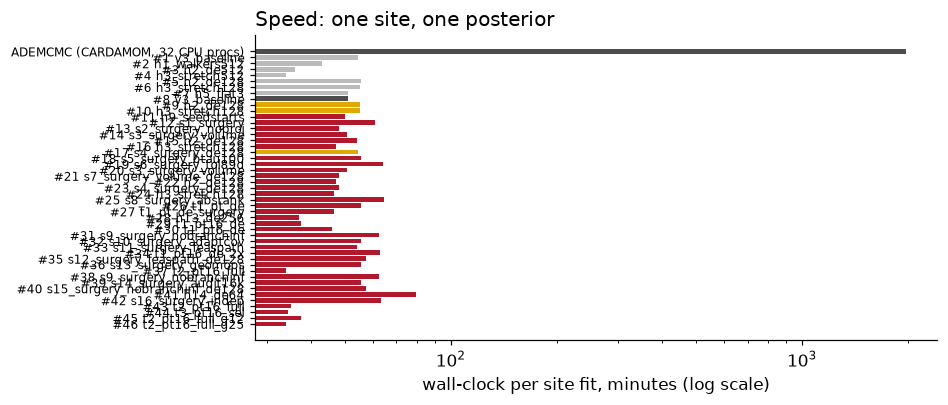

Updated 2026-09-03 17:47 PDT. An automated research loop run by a Claude Code session, with a Codex advisor after each iteration. Repository: sudshu/sarla-autoresearch.
CARDAMOM estimates the parameters of a land carbon model (DALEC, 89 parameters) from satellite and flux-tower data using a Markov-chain sampler that takes about 33 hours per site. SARLA is a GPU alternative that takes about 30 minutes. The question is whether the fast answer is also the right answer: does it produce the same uncertainty ranges the slow method would? We test that with synthetic experiments where the truth is known (an "OSSE"): a known parameter set generates fake observations at a real site, the sampler fits them, and we check whether the truth falls inside the sampler's uncertainty ranges as often as it should. The single score is the calibration gap G: 0 means perfectly calibrated; larger is worse. The loop proposes a change to the sampler, tests it at four development sites, keeps it only if G improves, and periodically checks four holdout sites that are never used for choosing, so the method cannot be tuned to one site's quirks.

One dot per experiment, coloured by what kind of change was tried; a star marks a change that was kept, a square the baseline. Hollow squares are the same variant on the holdout sites. The blue line is the current default.

Same experiments, one row each, one column per site. Green cells are well-calibrated fits, red cells are failures. A variant that fixes the red columns without turning green ones yellow is what we are after.


Left: fraction of the 89 parameters whose 90% posterior interval contains the truth (should be 0.90). Right: where the truth's probability density ranks among the posterior draws (should be 0.50; near 0 means the posterior is too narrow or misplaced). Grey band: holdout sites.

Rows marked v1-invalid were scored against protocol-v1 truths, which the model's own ecological constraints reject (see the log entry "Protocol v2"); they are kept for the record and decide nothing.
| # | iter | variant | category | G dev | G holdout | status | what and why |
|---|---|---|---|---|---|---|---|
| 46 | 34 | t2_pt16_full_g25 | tempering | 0.859 | discard | [KERNEL FAILED KNOWN-ANSWER TEST 2026-09-03: void] DE-scale sweep within full-posterior tempering (t2_pt16_full_g25), NL-Loo and DK-Sor, one seed; recorded for completeness only. | |
| 45 | 34 | t2_pt16_full_g12 | tempering | 0.869 | discard | [KERNEL FAILED KNOWN-ANSWER TEST 2026-09-03: void] DE-scale sweep within full-posterior tempering (t2_pt16_full_g12), NL-Loo and DK-Sor, one seed; recorded for completeness only. | |
| 44 | 36 | t3_pt16_sel | tempering | 0.874 | discard | [KERNEL FAILED KNOWN-ANSWER TEST 2026-09-03: void] Selective EDC tempering (state_trajectories, cfcr_ratio, nsc_ratio + data term), NL-Loo and DK-Sor, one seed: recorded for completeness only. | |
| 43 | 33 | t2_pt16_full | tempering | 0.952 | discard | [KERNEL FAILED KNOWN-ANSWER TEST 2026-09-03: on the 24-D toy this tempering kernel gives basin-mass TV 0.44 vs 0.13 for the chart walk; treat as void] Full-posterior tempering, 16 rungs: NL-Loo three seeds G 0.75/0.65/0.68 (sd 0.05) with high-allocation mass 0.39/0.36/0.17 (sd 0.12, truth 0.64); DK-Sor 1.29/1.46/1.28 with mass 0.07-0.12 (sd 0.02, truth 0.29); BE-Vie 1.06 and DE-Gri 0.71 one seed each. Dev G 0.95 so far. Most seed-stable variant yet; mode gate marginal at NL-Loo; two more seeds at BE-Vie and DE-Gri queued (iteration 40) for the v4 decision. | |
| 42 | 32 | s16_surgery_indep | atlas_geometry | 1.851 | discard | Surgery atlas + exact independence-MH jumps from the frozen atlas mixture (20% of steps): the jumps are accepted at a rate of 5e-5 to 1e-4, i.e. the atlas mixture is a useless global proposal at 89-D (its ESS 0.0002 said so); dev G 1.85 with NL-Loo in the wrong basin (4.42). Discarded. | |
| 41 | 30 | h14_de64 | moves | 1.190 | discard | Chart + DE at 64 walkers x 32k steps, three seeds on NL-Loo and DK-Sor: G 0.68 to 1.36; longer trajectories do not stabilise the mode weights (see per-seed high-mode fractions in the log). | |
| 40 | 31 | s15_surgery_nobranchinf_de128 | atlas_geometry | 0.960 | discard | Gate-fix surgery atlas + DE kernel, single seed: dev G 0.96 (NL-Loo 1.12, BE-Vie 0.91, DE-Gri 0.69, DK-Sor 1.11), equal to surgery+DE with the default atlas. High-allocation mass 0.03 to 0.15 at every site, i.e. consistently in the low-allocation budget even where the truth is high (NL-Loo 0.64, BE-Vie 0.74). | |
| 39 | 29 | s14_surgery_audit16k | atlas_geometry | 1.107 | discard | Surgery with 16384 audit draws per round and an ESS stop (sampling shortened to 30k steps): single seed, dev G about 1.1; the audit ESS never approaches the stop threshold, so a four-times larger audit does not change the atlas's coverage. | |
| 38 | 28 | s9_surgery_nobranchinf | atlas_geometry | 1.467 | discard | Gate-fix surgery atlas (chart walk), three seeds pooled with iteration 20: dev G 1.47 +/- 0.56, driven by NL-Loo 0.95 / 2.64 / 5.20 (one seed lands in the wrong basin). The 0.93 screen was seed luck; the chart walk on this atlas is as erratic as the baseline at NL-Loo. Mode gate fails at DK-Sor (0.42/0.14/0.20). Not promoted. | |
| 37 | 27 | t2_pt16_full | tempering | 1.022 | discard | [KERNEL FAILED KNOWN-ANSWER TEST 2026-09-03: on the 24-D toy this tempering kernel gives basin-mass TV 0.44 vs 0.13 for the chart walk; treat as void] Full-posterior tempering (EDC penalties flattened too, hard gate kept), 16 rungs, swaps 27-40%: NL-Loo G 0.75 with density rank 0.95 and high-allocation mass 0.39 (truth 0.64), the first tempering run whose cold rung reaches the truth's density (best -275 vs truth -284); DK-Sor 1.30 (mass 0.09, truth 0.29). Two sites, one seed; remaining dev sites and two more seeds queued (iteration 33). | |
| 36 | 26 | s13_surgery_geomops | atlas_geometry | 1.180 | discard | Surgery with rank changes only for 18+ dimension jumps, feasible-path connectivity, 89-D tolerances: first 89-D run with a geometric operation mix (60-73 refines, 6-10 splits, 1-10 rank changes, 2-5 branches per fit) but dev G 1.18 on one seed (NL-Loo 1.76, DK-Sor 1.48; BE-Vie 0.79, DE-Gri 0.69). The right operations, no better coverage: the audit still ends with about 100 uncovered draws and ESS 0.0002. | |
| 35 | 25 | s12_surgery_feaspath_de128 | atlas_geometry | 1.132 | discard | Feasible-path surgery atlas + DE kernel, single seed: dev G about 1.2 (0.80 to 1.39 across sites), below surgery+DE with default or gate-fix atlases. | |
| 34 | 24 | t1_pt16_de_2x | tempering | 1.171 | discard | [KERNEL FAILED KNOWN-ANSWER TEST 2026-09-03: on the 24-D toy this tempering kernel gives basin-mass TV 0.44 vs 0.13 for the chart walk; treat as void] DIAGNOSTIC at 2x the sampling budget (4.1M evaluations), 16-rung ladder with working swaps: NL-Loo and DK-Sor still end with density rank 1.00 and cold-rung medians 25-30 nats below the truth; high-allocation mass at NL-Loo stays far below the truth's mode. Time is not the missing ingredient; tempering does not equilibrate the mode weights here. Not a promotion candidate. | |
| 33 | 23 | s11_surgery_feaspath | atlas_geometry | 1.356 | discard | Surgery with feasible-path connectivity (infeasible midpoints repaired by nearby feasible perturbations), single seed: dev G 1.36 (DK-Sor 1.96), worse than the simpler gate-fix variant (0.93); operation mix unchanged (about 75 rank-changes per fit). | |
| 32 | 22 | s10_surgery_adaptcov | atlas_geometry | 1.163 | discard | Surgery atlas + adaptive pooled-covariance kernel (no DE jumps), single seed: erratic across sites (0.53 to 1.71); the learned covariance does not replace cross-mode moves. | |
| 31 | 20 | s9_surgery_nobranchinf | atlas_geometry | 0.934 | discard | Surgery with gate-crossing segments treated as unknown (no false branches), single seed: dev G 0.93 (NL-Loo 0.96, BE-Vie 1.00, DE-Gri 0.72, DK-Sor 1.06), the best surgery-only screen and level with surgery+DE (0.92). Branches fall to 2-5 per fit but rank-change takes over (77-82), so the repair is still mostly add-a-chart; confirmation seeds needed. | |
| 30 | 19 | t1_pt6_de | tempering | 0.977 | discard | [KERNEL FAILED KNOWN-ANSWER TEST 2026-09-03: on the 24-D toy this tempering kernel gives basin-mass TV 0.44 vs 0.13 for the chart walk; treat as void] Six-rung likelihood tempering (beta 1 -> 0.03), 24 walkers per rung: dev G 0.98 on one seed; swap acceptance 3-18%. High-allocation mass 0.30 at NL-Loo and 0.23 at BE-Vie where the truths sit in that mode (0.64, 0.74): still under-weighted. | |
| 29 | 21 | t1_pt16_de | tempering | 1.208 | discard | [KERNEL FAILED KNOWN-ANSWER TEST 2026-09-03: on the 24-D toy this tempering kernel gives basin-mass TV 0.44 vs 0.13 for the chart walk; treat as void] 16-rung likelihood tempering (ratio 0.79), 16 walkers per rung, swaps every 5 steps: the ladder now works (adjacent swap acceptance 26-42%) but on one seed the cold rung still misses: NL-Loo G 0.96, density rank 1.00, high-allocation mass 0.12 with the truth in that mode (median cold log-posterior 40 nats below the truth); DK-Sor 1.46. Working ladder, insufficient steps per walker at this budget. | |
| 28 | 18 | h13_de256 | moves | 1.608 | discard | Chart + DE at 256 walkers x 8k steps, three seeds on NL-Loo and DK-Sor only: worse G (NL-Loo 1.44-1.64, DK-Sor 1.59-1.81; 8k steps too few) and mode weights still seed-dependent (NL-Loo high-mode mass 0.38/0.46/0.67). More walkers do not stabilise the weights. | |
| 27 | 17 | t1_pt_de_surgery | tempering | 0.993 | discard | [KERNEL FAILED KNOWN-ANSWER TEST 2026-09-03: on the 24-D toy this tempering kernel gives basin-mass TV 0.44 vs 0.13 for the chart walk; treat as void] Same tempering with the surgery atlas: 0.99, swap acceptance 0-2%. | |
| 26 | 17 | t1_pt_de | tempering | 0.978 | discard | [KERNEL FAILED KNOWN-ANSWER TEST 2026-09-03: on the 24-D toy this tempering kernel gives basin-mass TV 0.44 vs 0.13 for the chart walk; treat as void] Likelihood-only parallel tempering, 4 rungs (beta 1/0.37/0.14/0.05), 32 walkers each, chart/DE within rungs: dev G 0.98 on one seed, but adjacent-rung swap acceptance 0-2%, so the rungs do not communicate and the run is effectively DE with 32 walkers. NL-Loo high-mode mass 0.22 (truth in that mode). 16-rung ladder queued (iteration 21). | |
| 25 | 16 | s8_surgery_absrank | atlas_geometry | 1.197 | discard | Surgery with the spectral-gap rule off, 4x rank hysteresis and a 1000-nat branch dip: single seed. Operations still 39 branch / 45 rank-change per fit: the straight segment between feasible points crosses the hard gate almost always, so the connectivity test was reporting infeasibility, not strata (fixed as an option, tested in iteration 20). | |
| 24 | 15 | h3_stretch128 | moves | 1.001 | discard | Chart + stretch (128 x 16k), three fresh seeds under v4: dev G 1.00 +/- 0.03, t = 2.9 PASSES; mode-weight gate FAILS (high-mode mass 0.60/0.75/0.30 at NL-Loo, 0.04/0.99/0.08 at DK-Sor). Same verdict as DE. Not promoted. | |
| 23 | 14 | s4_surgery_de128 | atlas_geometry | 0.964 | discard | Surgery atlas + DE kernel, three seeds: dev G 0.96 +/- 0.04 vs baseline 1.72 +/- 0.43, t = 3.0 PASSES the score test; mode-weight gate FAILS at NL-Loo (high-mode mass 0.54/0.32/0.79, sd 0.23), passes at DK-Sor (0.11/0.05/0.06). Real NL-Loo data: 0.61 vs ADEMCMC 0.815. Best score so far; not promoted. | |
| 22 | 13 | h2_de128 | moves | 1.068 | discard | Chart + DE (128 x 16k), three fresh seeds under protocol v4: dev G 1.07 +/- 0.08 vs baseline 1.72 +/- 0.43, two-sample t = 2.6 PASSES; mode-weight gate FAILS: high-allocation mass across seeds 0.61/0.84/0.71 at NL-Loo (sd 0.11) and 0.97/0.06/0.27 at DK-Sor (sd 0.48). Better average, unreliable mode weights. Not promoted. | |
| 21 | 12 | s7_surgery_volume_de128 | atlas_geometry | 1.026 | discard | Volume-weighted surgery + DE kernel, one seed: 1.03 (NL-Loo 0.85, BE-Vie 1.06, DE-Gri 0.86, DK-Sor 1.34); not better than surgery + DE with uniform weights (0.92). | |
| 20 | 12 | s3_surgery_volume | atlas_geometry | 1.131 | discard | Surgery with tangent-volume weights, three seeds (pooled with iteration 8): dev G about 1.16 +/- 0.05 vs baseline 1.72; below the v3 threshold; seed-stable. NL-Loo stays at density rank 1.00 (1.44 / 1.56 / 1.46). | |
| 19 | 11 | s6_surgery_tol89d | atlas_geometry | 1.054 | discard | Surgery with 89-D tolerances (model_tol 20, bend_tol 3, branch_tau 100, 16 flags, volume weights): 1.05 on one seed. Diagnostics unchanged: 36-45 branches and 34-45 rank-changes per fit, ESS 0.0002, no extend. The rank rule and the straight-segment connectivity test do not describe this posterior's geometry. | |
| 18 | 10 | s5_surgery_btau100 | atlas_geometry | 1.007 | discard | Surgery with branch only above a 100-nat dip and 16 flags/round: 1.01 on one seed; DK-Sor 0.92 with a near-perfect typical-set gap, NL-Loo 1.26 (rank 1.00). | |
| 17 | 10 | s4_surgery_de128 | atlas_geometry | 0.919 | confirm | Surgery atlas + chart/DE kernel (128 x 16k): dev G 0.92 on one seed, best single-seed screen so far (NL-Loo 0.97, BE-Vie 0.80, DE-Gri 0.85, DK-Sor 1.06). Confirmation seeds queued (iteration 14). | |
| 16 | 9 | h3_stretch128 | moves | 1.053 | discard | Chart + stretch moves (128 x 16k), three seeds: dev G about 1.06 with very small seed spread; same situation as DE under v3. | |
| 15 | 9 | h2_de128 | moves | 1.048 | discard | Chart + DE moves (128 x 16k), three seeds: dev G 1.05 +/- 0.09 vs baseline 1.72 +/- 0.43. Under the v3 rule (0.86 below baseline) not accepted; the two-sample test gives t = 2.6. Re-tested with three fresh seeds under protocol v4 in iteration 13. | |
| 14 | 8 | s3_surgery_volume | atlas_geometry | 1.163 | discard | Surgery with tangent-volume mixture weights: 1.16 (one seed), best of the three; the sampler's best draws reach the truth's density at 3 of 4 sites. | |
| 13 | 8 | s2_surgery_noproj | atlas_geometry | 1.287 | discard | Surgery without normal projection: 1.29 (one seed). Worse than with projection at DK-Sor (1.48 vs 1.02), better at NL-Loo (1.74 vs 2.79): no clean signal yet. | |
| 12 | 8 | s1_surgery | atlas_geometry | 1.332 | discard | Topology-aware surgery, defaults: dev G 1.33 vs 1.72 (one seed; below the 0.86 threshold). Better at DK-Sor (1.02 vs 3.5) and BE-Vie, worse at NL-Loo (2.79). 89-D trace: 27 branches, 11 rank-changes, 4 refines, 0 extend/merge; ESS 0.0002 after 6 rounds. | |
| 11 | 5 | h9_seedstarts | starts | 1.329 | discard | Chains start from the polished seeds instead of chart centres: 1.33, no gain; NL-Loo and DK-Sor still miss the basin (rank 1.00). | |
| 10 | 5 | h3_stretch128 | moves | 1.045 | confirm | Chart + stretch moves, 128 x 16k: dev G 1.05 vs 1.72 (one seed); confirmation seeds queued. DK-Sor 1.29. | |
| 9 | 5 | h2_de128 | moves | 0.962 | confirm | Chart + DE moves, 128 walkers x 16k: dev G 0.96 vs baseline 1.72 (one seed). Improvement 0.76 is just under the noise floor 0.86; two more kernel seeds queued (iteration 9) before deciding. DK-Sor 1.36 vs 3.5. | |
| 8 | 4 | v3_baseline | baseline | 1.717 | 5.000 | baseline | Protocol v2/v3 baseline: the v3 fast path at 4 dev sites x 3 seeds (+ CZ-wet holdout). Fails by never reaching the posterior basin at NL-Loo (density rank 1.00 all seeds), DK-Sor (G 14/2.6/3.0) and CZ-wet (5.2); fine at BE-Vie and DE-Gri. |
| 7 | 2 | h5_flat3 | charts | 1.447 | v1-invalid | Chart proposal inflated x sqrt(3) in flat directions: 1.45 (v1 truths); worse at NL-Loo and BE-Vie. | |
| 6 | 2 | h3_stretch128 | moves | 1.188 | v1-invalid | Chart + stretch at 128 walkers x 16k steps: 1.19 (v1 truths), equal to baseline at equal wall-clock. | |
| 5 | 2 | h2_de128 | moves | 1.358 | v1-invalid | Chart + DE at 128 walkers x 16k steps: 1.36 (v1 truths). Good at ES-LJu (0.37) and DE-Gri, but collapsed at BE-Vie (3.57, rank 0.01). | |
| 4 | 1 | h3_stretch512 | moves | 1.199 | v1-invalid | Chart + Goodman-Weare stretch at 512 walkers: 1.20, equal to baseline at 62% of the wall-clock (34 vs 53 min). Best of the three; the 128-walker x 16k-step version runs in iteration 2. | |
| 3 | 1 | h2_de512 | moves | 1.299 | v1-invalid | Chart + differential-evolution moves at 512 walkers: 1.30, no gain. BE-Vie unchanged (2.57); DE collapsed too tightly at DE-Gri (rank 0.12). | |
| 2 | 1 | h1_walkers512 | walkers | 1.425 | v1-invalid | 8x walkers (512 x 4k steps), chart moves only: worse (1.43). Walkers never contract in 2k burn-in steps: over-dispersed at ES-LJu (50% intervals hold 78%), density rank 0.9. | |
| 1 | 0 | v3_baseline | baseline | 1.190 | 2.005 | v1-invalid | Baseline: the v3 fast path (chart-shaped walk, 64 chains x 32k steps, region screen + restarts) at 4 dev sites x 3 seeds and 4 holdout sites. Sets the noise floor. |
Plain-language record, newest at the bottom. One entry per iteration plus
setup notes. Times are US Pacific.
prepared: an H100 (3 slots) and two Blackwell RTX PRO 4500 (1 slot each).
fit: at every site checked, feasible prior draws are near-dead ecosystems
with GPP below 5% of the observed value. Truths are now jittered real-data
modes with a GPP and biomass plausibility check.
variants/v3_baseline.json) at the fourdevelopment sites with three kernel seeds each, and once at the four
holdout sites. 16 fits, five GPU slots.
accept/reject decision uses, and the baseline G on both site sets.
DE, stretch and adaptive-covariance kernels run without error at toy scale;
the queue ran two tiny jobs end to end on the H100.
acceptable at NL-Loo (0.79, but one of three seeds never reached the typical
set: density rank 1.00), and poor at BE-Vie (2.59): there, 22 to 31 of the 89
parameters sit more than 2 sd from the truth and the LAI projection band
misses the truth almost everywhere. The BE-Vie truth has a nearly empty wood
pool, and the sampler's posterior does not contain that solution.
relaxed-plausibility truth; the sampler never found its region at all).
acceptance threshold delta is fixed at 0.22 from here on.
Blackwell GPU (about 25 min alone on the H100), 2.4M model evaluations.
earlier OSSE work hold up), so the remaining error is mixing and coverage,
not junk regions.
steps each: H1 plain chart moves G 1.43, H2 chart + differential-evolution
moves 1.30, H3 chart + Goodman-Weare stretch moves 1.20. Baseline 1.19,
acceptance needs < 0.97. All three discarded.
from its diverse start onto the typical set (ES-LJu 50% intervals held the
truth 78% of the time; density rank 0.9). Steps per walker matter more than
walker count for this kernel.
instead of 53 (not the 2x needed for the speed path). Iteration 2 tests DE
and stretch at 128 walkers x 16k steps, which gives each walker four times
the steps.
reaches the near-zero-wood truth there.
seed never reached the truth's density: the truth itself sits 780 (BE-Vie)
to 1,230 (NL-Loo) nats below the posterior's bulk. The data terms are fine;
the difference is entirely the model's soft ecological-constraint (EDC)
penalties, which the random jitter had violated. A truth the model's own
priors reject at e^-1000 is not a recovery test of the sampler.
All twelve site datasets are being regenerated with an EDC-consistency check
on the truth (within 10 nats of the mode's penalty). Iteration 4 will be
the v2 baseline; the noise floor is re-measured there. The
pending iteration-3 jobs were cancelled; the running iteration-2 jobs are
allowed to finish and will be logged as v1.
walkers at 512 x 4k do not contract; stretch moves match the baseline in
62% of the time) and the fact that no chain was ever stuck.
pilot's real-data modes themselves carry soft-EDC penalties near 500 nats
(posterior draws: about 6). The v2 truth is therefore a typical accepted
draw from a short run of CARDAMOM's own ADEMCMC on the real data (4 chains
x 30k iterations per site, running now on the local CPUs, about 2 h), the
same recipe the NL-Loo OSSE used. Independent of the sampler under test and
EDC-consistent by construction.
inflation x sqrt(3): 1.45. Baseline 1.19. Judged against the invalid v1
truths, so none of this decides anything; the consistent pattern across
iterations 1 and 2 is that stretch moves are the one change that never
hurt, and DE moves are erratic (very good at some sites, collapsed at
BE-Vie with density rank 0.01).
v2 datasets exist; the truth chains are about 60% through.
(soft-EDC penalty of the last 30% of draws: median -11 to -14, the same as
the 33-h NL-Loo reference), and not at ES-LJu, FR-Pue, DE-Geb (-28 to -125).
Development set under v2 is therefore NL-Loo, DE-Gri, BE-Vie, DK-Sor; the
three slow sites join CZ-wet as holdout once their 60k-iteration runs finish
(about 4 h). Iteration 4 (v2 baseline) starts as soon as the first five
datasets are generated.
the running 33-h NL-Loo arm filled it while the last v2 datasets were being
written. Freed by thinning the finished truth chains to compact files
(last 30%, every 10th draw; the truth selection is unchanged) and deleting
the v1 fit outputs, which are fully represented by their scores. Fits are
pruned after scoring from now on.
site's pooled-median log-posterior (-213 to -226) with soft-EDC penalties of
-9 to -17, the converged range. ES-LJu, FR-Pue and DE-Geb are re-running at
60k iterations with a smaller output footprint.
128 x 16k, seed starts, DE at 128 x 16k) are on the GPUs; 24 fits, about
4.5 h.
all three seeds (the truth, a typical posterior draw at log-posterior -284,
has higher density than every one of 20,000 draws; the atlas's best chart
sits at -310 to -340). DK-Sor is worse: truth -276, seeds -946 at best, the
kernel climbs to -351 in 32k steps and never arrives (G 14, 85 of 89
parameters off). BE-Vie and DE-Gri are fine (rank 0.4 to 0.8).
with 3,000 iterations (the EDC penalties make the surface piecewise, and
the optimizer stops at once). Every nat of climbing in the fast path has
been done by the MCMC kernel. The seed/atlas stage therefore needs an
ensemble warm-up (queued as iterations 6 and 7: 1,000 and 4,000 stretch
steps over the seed population before the atlas is built).
self-correcting, rank-adaptive Laplace atlas its primary target instead of
the downstream kernel. Review of sarla.py: rank detection, the importance
audit, normal projection and the diagnostic labels existed, but every label
ended in "append another Gaussian"; there were no neighbours, extents,
strata or rank transitions.
sarla2.py (see ATLAS_SURGERY.md): charts with rank, tangentextents, neighbours, branch ids and typed links; extend grows a chart instead
of adding one; refine caps and tiles at a bend; split replaces a chart by two;
branch starts a new stratum when the corrected point is not density-connected;
rank-change links strata of different local dimension; merge fuses redundant
neighbours. Exact MH is preserved (mixture weights known; atlas frozen before
sampling). Round-by-round diagnostics are logged and reach the score files.
mass); on a ridge that turns into a bump, true extend gives KL 0.23 vs 0.58
for v1 with one chart instead of two; the banana is on par; seeding on the
bump fires rank-change correctly but repeated splits cost coverage.
over kernel tuning. Iteration 8 tests S1 (surgery defaults), S2 (no normal
projection) and S3 (tangent-volume weights). The surgery knobs are
first-class Variant fields (prefix sg_).
CZ-wet the atlas never covers the posterior's basin (baseline G 0.9-1.7,
3.0-14, 5.2 respectively), while BE-Vie and DE-Gri are fine.
6 and 7) were withdrawn so the surgery experiments (iteration 8) run right
after the remaining kernel jobs of iteration 5; the warm-up jobs are
resubmitted once iteration 8 is on the GPUs (job files kept under
runs/autoresearch/queue/deferred).
coverage: at NL-Loo every seed gives density rank 1.00 (the truth has
higher density than all 20,000 draws; the atlas's best chart sits 30 to 60
nats below the truth), at DK-Sor the posterior sits in the wrong basin
altogether (G 14.0 / 2.6 / 3.0 across seeds, 85 of 89 parameters more than
2 sd off in the worst case), and CZ-wet (holdout) scores 5.2. BE-Vie (1.11)
and DE-Gri (0.82) are fine.
alone had set the acceptance threshold to 3.4. Under v3 the baseline is
G_dev 1.72, noise floor delta 0.86 (still large: the baseline itself is
erratic at the two hard sites).
posterior's basin. Iteration 8 (surgery engine, three variants) is next in
the queue after the remaining kernel jobs of iteration 5.
tangent-volume weights (all queued), restart tuning afterwards; kernel tuning
paused until the basin is shown to be represented. Page redesigned: live
"right now" panel, per-site heatmap, protocol bands, reading guide.
dev G 0.96, chart + stretch 1.05, seed starts 1.33; baseline 1.72. At DK-Sor
the two population kernels score 1.3 to 1.4 where the baseline scored 3.5
(capped), so ensemble moves do find the basin that the chart walk misses.
and the protocol's confirmation rule asks for three seeds before promotion.
Two more kernel seeds of both variants are queued as iteration 9.
perfect typical-set gap (44 vs the expected 44.5) but density rank still
1.00; the 89-D audit trace is dominated by "branch" operations and the
importance ESS stays near zero through six rounds, so the audit-driven
repair is far from converged at this scale (a knob problem: branch_tau and
the segment test are tuned for 2-D). Full verdict when all 12 fits land.
weights 1.16; baseline 1.72 (threshold 0.86 below). All discarded on one
seed under the rule, but the trend is consistent: the surgery atlas lifts
DK-Sor from 3.5 to about 1.0 and the sampler's best draws now reach the
truth's density at three of four sites (at NL-Loo still 8 to 14 nats short).
40 to 50 charts, almost all by "branch" (17 to 35 per fit) and "rank-change"
(5 to 28); extend never fires, merge never fires, splits are rare, and the
importance ESS stays at 0.0002 with 50 to 114 uncovered draws at the end.
The 2-D-tuned tolerances (model error 2 nats, branch dip 10 nats) make
every discrepancy a new stratum in 89 dimensions. Iteration 11 tests
tolerances scaled for 89-D (model_tol 20, bend_tol 3, branch_tau 100, 16
flags per round, volume weights).
confirm S3 with two more seeds, test branch_tau 20 next to the queued 100.
Queued as iteration 12 (12 fits). Kernel-only DE/stretch confirmations
(iteration 9) and surgery+DE / branch_tau 100 (iteration 10) are running.
truths come from 60k-iteration reference runs; ES-LJu and FR-Pue posteriors
sit at soft-EDC penalties near -118 for every draw, so the consistency rule
is now relative to each site's reference chain (see autoresearch.md). Their
baseline fits are queued to complete the baseline's holdout score.
had crashed at 05:57 with a write error: the home-directory quota that my
truth chains filled. It is being restarted on the large local data volume.
The loop's job mirror and truth-chain archives now live there as well
(symlinked from runs/), so the loop can no longer starve the home quota.
baseline 1.72 +/- 0.43. Under the v3 rule neither is accepted (0.67 short of
the 0.86 threshold that the baseline's own erratic seeds set); the
two-sample test gives t = 2.6 for both. Protocol v4 (logged) adopts that
test from iteration 13, where DE runs three fresh seeds.
far; NL-Loo 0.97, BE-Vie 0.80, DE-Gri 0.85, DK-Sor 1.06), surgery with a
100-nat branch threshold 1.01. Confirmation seeds for surgery + DE queued.
high-allocation mode (f_wood 0.64). Fraction of posterior mass there across
seeds: baseline 0.11 / 0.58 / 0.55, DE 0.52 / 1.00 / 0.82, stretch
0.51 / 0.26 / 0.81. From now on promotion also requires that this fraction
be stable across seeds (sd <= 0.10) at NL-Loo and DK-Sor, and every
candidate is fitted once to the real NL-Loo data to compare with ADEMCMC's
0.815 (queued for baseline, DE, surgery+DE, volume-surgery+DE).
and added to the idea bank: likelihood-only tempering with the EDC gate at
every rung and mode-stratified initialisation (T1), and a two-cell bridge
estimator of the relative mode mass to reweight pooled DE draws (B1).
arm no longer exists (deleted during the redirect by the sibling session);
nothing will be scored on it. The 32-chain NL-Loo OSSE reference arm was
relaunched at about 19:50 PDT on the data volume, a fresh 33 h.
kernel-density proposal on the cell's own draws (a moment-matched Gaussian
is entirely EDC-infeasible at 89-D; bandwidth 0.3 sd also infeasible, 0.1 sd
works). On the volume-surgery + DE fit at NL-Loo the pooled draws put 8% of
the mass in the high-allocation mode; the bridge says about 100% (split
halves 0.99 and 0.72). The OSSE truth is in that mode, and ADEMCMC on real
data puts 82% there, so the direction is right but the estimate is too
noisy to reweight with yet. Next: smaller bandwidth, more proposal draws,
and the three fresh DE fits of iteration 13 as test cases.
per round and volume weights: dev G 1.05 on one seed (NL-Loo 1.22, BE-Vie
0.79, DE-Gri 0.82, DK-Sor 1.39). Better than the baseline, no better than the
earlier surgery variants.
operations per fit, 1 to 3 splits, 3 to 6 refines, no extend, no merge,
importance ESS 0.0002 after six rounds, 70 to 100 uncovered draws at the
end. So (a) a straight segment between a chart centre and a corrected point
dips by more than 100 nats almost always in 89-D (the EDC penalties make
the surface rugged), so "not density-connected" is not a usable branch
criterion here; and (b) local rank as counted by the spectral-gap rule
varies between 24 and 54 from chart to chart on a near-continuous spectrum,
so "rank-change" is mostly noise. The surgery is real, but its two
topological tests are tuned to 2-D geometry. Iteration 16 disables the gap
rule (rank = eigenvalues below prior curvature), demands a 4x-robust rank
change and a 1000-nat dip for a branch, to see whether extend/refine/merge
then carry the repair.
about 0.05 (baseline 1.72 +/- 0.43). Under v3 not promoted. NL-Loo remains
the site where the atlas never reaches the truth's density (rank 1.00 for
all three seeds), so the gain comes from DK-Sor and BE-Vie.
surgery + DE (0.92, iteration 10) remains the best screen and its
confirmation seeds are queued (iteration 14).
(scripts/sarla_tempered.py): 4 rungs with inverse temperatures 1 to 0.05,
32 walkers each, chart/DE moves within rungs, adjacent swaps every 10 steps,
EDC gate and EDC penalties at full strength on every rung, only the cold
rung recorded (exact). Toy-scale check: swap acceptance 0.38 / 0.51 / 0.14.
Queued as iteration 17 with and without the surgery atlas (8 fits).
fraction 0.62) the bridge gives 0.22 at bandwidth 0.05 sd and 0.10 at 0.1
sd, with split halves disagreeing by 0.3, and the cell evidences shift by 44
nats between bandwidths. The kernel-density proposal is too narrow to
bridge an 89-D cell; the estimator is not usable as built. Parked; the
tempering test (iteration 17) is the route to correct mode weights.
16k steps gives dev G 1.07 +/- 0.08 against the baseline's 1.72 +/- 0.43;
the two-sample test passes (t = 2.6), the per-site guard passes, wall-clock
is unchanged.
mass in the high-wood-allocation mode is 0.61 / 0.84 / 0.71 across seeds at
NL-Loo (truth is in that mode) and 0.97 / 0.06 / 0.27 at DK-Sor (truth in
the low mode). The kernel visits both modes but their relative weight is
set by which walkers happened to start where. This is exactly the mode
inversion seen on the real NL-Loo data, now reproduced under a known truth.
to fix this; surgery + DE confirmation (iteration 14) and stretch fresh
seeds (15) are running.
1.72 +/- 0.43; two-sample t = 3.0). Per site 1.02 / 0.78 / 0.78 / 1.21
(NL-Loo / BE-Vie / DE-Gri / DK-Sor). Not promoted: at NL-Loo the
high-allocation mode holds 54%, 32% and 79% of the mass across seeds
(gate needs an sd of 0.10 or less); at DK-Sor the weights are stable
(5 to 11%).
mode against the converged ADEMCMC reference of 0.815 (90% CI 0.79-0.83):
baseline 0.54, DE 0.59, surgery + DE 0.61, volume-weighted surgery + DE
0.91. None inside the interval. Every chain sits entirely in one mode
(per-chain spread 0.25 to 0.47), so the fraction is set at initialisation.
Interesting aside: the surgery + DE fits reach best log-posteriors of
-184.5 and -179.2 on the real data, above the 64-chain ADEMCMC fleet's best
of -192.8.
coverage and score; the relative mode weight remains a coin toss decided
by where walkers start. Tempering (iteration 17) is the queued remedy;
256-walker DE (18) tests the cheap alternative.
weights: 60% / 75% / 30% at NL-Loo and 4% / 99% / 8% at DK-Sor. The
population kernels are all better than the baseline by about 0.7 in G and
all fail the mode-weight gate the same way: every chain lives in one mode
for the whole run, so the mixture weight is whatever the initialisation
gave. Not promoted.
improve calibration without fixing the mode weights. Iterations 16 to 18
(absolute-rank surgery, tempering, 256 walkers) are on the GPUs; tempering
is the only one designed to move mass between modes.
0.05): DE-Gri G 0.87, but adjacent-rung swap acceptance only 3-5%: the
ladder is far too coarse for a likelihood whose spread across modes is tens
of nats. A 16-rung ladder (ratio 0.79, 16 walkers per rung, same budget) is
queued as iteration 21 on the two mode-sensitive sites.
1000-nat branch threshold: dev G 1.20 on one seed (BE-Vie 0.75, DE-Gri 0.85,
DK-Sor 1.79, NL-Loo 1.39). Still 39 branch and 45 rank-change operations per
fit. Reading the code against the trace: the connectivity test declared
"not connected" whenever any midpoint of the straight segment was
infeasible under the hard EDC gate, and at 89-D almost every segment between
two feasible points leaves the thin feasible set. The engine was labelling
gate crossings as new strata. This is now a switch (default unchanged for
reproducibility); iteration 20 tests the variant where gate crossings are
"unknown" and the repair falls to refine/extend.
(0.99 with the surgery atlas), single seeds. Adjacent-rung swap acceptance
0 to 2% at every site: the temperature steps (factor 2.7) are far too large
for a data likelihood whose spread is tens of nats, so the rungs never
exchange walkers and the result is DE with a quarter of the walkers.
NL-Loo high-allocation mass 0.22 with the truth in that mode.
5 steps, same evaluation budget) is queued as iteration 21 on the two
mode-sensitive sites; if its swap rates reach 20-40% it becomes the first
variant that can actually move mass between the wood-allocation modes.
21) runs right after the 256-walker DE test (18); the six-rung tempering
(19), the no-branch-on-gate surgery (20) and surgery + adaptive covariance
(22) are withdrawn for now and will be resubmitted afterwards
(runs/autoresearch/queue/deferred2).
the two mode-sensitive sites: G worse (NL-Loo 1.44 to 1.64, DK-Sor 1.59 to
1.81; each walker gets too few steps) and the high-allocation mass at
NL-Loo still 0.38 / 0.46 / 0.67 across seeds. Discarded. The 16-rung
tempering fits are running now.
adjacent-rung swap acceptance 26 to 42% at both sites, so the rungs now
exchange walkers freely. Yet at NL-Loo the cold rung ends with density rank
1.00, its median log-posterior 40 nats below the truth's, and 12% of its
mass in the high-allocation mode where the truth sits (G 0.96); DK-Sor G
1.46 with 20% in the high mode (truth in the low mode).
equilibrated; tempering is not yet disproved, but at the fixed budget it
does not beat the plain population kernels. A diagnostic run at twice the
sampling budget (iteration 24, labelled as such and not a promotion
candidate) will tell whether the ladder equilibrates the weights given
time. Six-rung tempering (iteration 19) is landing with swap rates of 3 to
18% and G 0.81 to 0.91 on the first two sites.
acceptance 3 to 18%. High-allocation mass 0.30 at NL-Loo and 0.23 at
BE-Vie against truths in that mode; DK-Sor 0.35 against a low-mode truth.
Every tempering configuration at the fixed budget lands between 0.96 and
0.99 in G with the same mode-weight problem as the plain kernels. The
2x-budget diagnostic (iteration 24) decides whether time is the missing
ingredient. Feasible-path surgery with the DE kernel queued (iteration 25).
strata (plus 89-D tolerances, no spectral-gap rank rule, volume weights),
baseline chart-shaped kernel, one seed: dev G 0.93 (NL-Loo 0.96, BE-Vie
1.00, DE-Gri 0.72, DK-Sor 1.06). Level with surgery + DE (0.92) without any
population moves, and better than every earlier surgery variant (1.05 to
1.33). Confirmation seeds queued (iteration 28).
local rank still varies between charts by dozens of dimensions, so
"rank-change" is doing the work of add-a-chart. Iteration 26 requires a rank
jump of at least 18 dimensions before calling it a rank change.
single seed: dev G 1.16 but 0.53 to 1.71 across sites. A globally learned
within-mode covariance does not substitute for cross-mode moves. Discarded.
three sites, so not obviously better than the gate-fix variant (0.93).
(NL-Loo 1.60, BE-Vie 1.18, DE-Gri 0.68, DK-Sor 1.96). Worse than treating
gate crossings as unknown (0.93, iteration 20), and the operation mix is the
same (about 75 rank-changes per fit). Discarded. The rank-jump threshold
(iteration 26) is the remaining lever on the operation mix.
26 to 42% swap acceptance: NL-Loo G 0.87 and DK-Sor 1.47, both with density
rank 1.00 and the cold rung's median 25 to 30 nats below the truth; high-
allocation mass 0.19 at NL-Loo (truth in that mode) and 0.08 at DK-Sor.
With a working ladder and double the steps the cold chain still does not
reach the truth's density, so time is not what tempering lacks. Tempering
is parked; the full-posterior variant (iteration 27, which also flattens
the EDC penalties) is the last tempering test in the queue.
all local work runs on CPU.
(0.96 over three seeds) or gate-fix atlas. Discarded.
its operation mix is, for the first time at 89-D, geometric: 61 to 72
refines, 9 to 10 splits, 5 to 10 rank changes and 3 to 5 branches per fit
instead of 80 rank changes; first two sites G 0.79 (BE-Vie) and 0.69
(DE-Gri). Extend and merge still never fire: the quadratic model error at a
corrected point is never below 20 nats, so every out-of-extent flag becomes
a refine (a bend), and no two charts ever explain each other's centres.
treated as unknown), the repair at 89-D becomes 60 to 73 refines, 6 to 10
splits, 1 to 10 rank changes and 2 to 5 branches per fit: the surgery is
doing what it was designed to do. Dev G on one seed: 1.18 (BE-Vie 0.79,
DE-Gri 0.69, NL-Loo 1.76, DK-Sor 1.48). NL-Loo put 94% of its mass in the
high-allocation mode this time (truth 0.64), DK-Sor 0%: the mode weights
are still set by luck.
importance ESS of 0.0002, so the atlas never gets close to covering the
posterior in six rounds regardless of which operation repairs each flag.
The large-audit variant (iteration 29) and the atlas independence jumps
(32) are the next tests of that.
data term; the hard feasibility gate kept at every rung), 16 rungs, swap
acceptance 27 to 40%: at NL-Loo G 0.75, density rank 0.95, the cold rung's
best draw above the truth's log-posterior for the first time in any
tempering run, and 39% of the mass in the high-allocation mode (truth in
that mode; the likelihood-only ladders gave 12 to 22%). DK-Sor 1.30 with
9% high-mode mass (truth 0.29). One seed, two sites: the remaining two
development sites and two more seeds at NL-Loo and DK-Sor are queued
(iteration 33). This supports the sibling session's reading that the
barrier between the allocation modes is the EDC penalty surface, not the
data term.
transitions the log-posterior dips only 10 to 38 nats below the lower
endpoint, and the dip is made of soft EDC penalties (state_trajectories
first, then the cfcr / nsc / fffr ratio constraints), with the data term flat
or rising. An ADEMCMC walker crosses f_wood = 0.5 dozens of times per few
thousand iterations: for it the two "modes" are not separate basins but one
low, EDC-textured ridge. (A 700-nat wall seen along a straight line in z was
an interpolation artefact.) This matches iteration 27: flattening the EDC
penalties is what lets the cold chain cross; the chart walk and the DE moves
at our budget cross it rarely, so the weights depend on initialisation.
verified under jitter), found by L-BFGS from a high-allocation Laplace
chart, and it lies in the LOW-allocation budget (f_wood 0.19, wood residence
43 yr). ADEMCMC's best draw is -192.5 (f_wood 0.77, 10 yr); 82% of the
posterior mass is in the high-throughput budget while the density maximum
is in the plausible one. A MAP product and a posterior-median product would
report opposite wood residence times at this site. Damped Newton with the
exact Hessian was not the tool (stalled at -186; some Hessians still NaN).
compare its high-mode mass with ADEMCMC's 0.815.
mode transitions (state_trajectories carries most of the soft-EDC part of
the 10-38 nat crossing dip; cfcr_ratio and nsc_ratio occasionally; the other
12 EDCs nothing), selective tempering is implemented: the data term plus a
chosen list of EDC penalties is flattened, the hard gate and the remaining
EDCs stay at full strength. Queued as iteration 36 on NL-Loo and DK-Sor.
The real-data MAP point (log-posterior -161.9, found by the sibling
session) is added to the NL-Loo seed files (a feasible point; feasibility
depends on parameters only).
ADEMCMC-draw truth (f_wood 0.80): the global posterior maximum (-263.2) is 61
nats above the truth's density and in the LOW-allocation budget (f_wood
0.21); optimiser endpoints form two families of local maxima, one per
budget, the low family holding the peak by about 10 nats as on the real
data. With a known truth in the high-allocation budget a MAP product gets
the wood budget wrong while the posterior mass gets it right. This is why
the loop scores calibration of the mass, and why the real-data MAP at
-161.9 in the plausible budget is not evidence for that budget at Loobos.
weight estimators and both consistent with the loop's bridge failure:
(a) a two-hill Laplace mass estimate (Gaussian at each budget's maximum)
cannot work at 89-D with EDC walls: both "maxima" have 9 to 13 negative
Hessian eigenvalues (wall-bounded points), 13 to 21 eigenvalues below prior
precision, and only 1% of draws from either Gaussian are feasible; on the
OSSE it gives 0.000 for a truth in the high hill, and its 0.80 on real data
is a convention coincidence. (b) Gauss-Newton / Levenberg-Marquardt with the
exact residual Jacobian stalls where damped Newton stalled (real -185.8,
OSSE -294.3 vs L-BFGS -161.9 / -263.2): the quadratic model step is
rejected and the method degenerates to short gradient steps. Newton-family
optimisers are off the table for the point estimate; L-BFGS seeds stay.
gives 0.95, 2.64 and 5.20 across seeds (the last a wrong-basin failure),
while BE-Vie, DE-Gri and DK-Sor are stable (1.03, 0.84, 1.13). With the
chart-shaped walk, whichever atlas is built, NL-Loo's outcome depends on
where the 64 chains start. Not promoted. The population kernels never
showed this failure mode (their worst NL-Loo seed was 1.36), so the
remaining surgery tests are combined with the DE kernel (iterations 31, 32).
the budget: dev G 1.11 (0.77 to 1.48 across sites), single seed. Uncovered
draws per audit grow in proportion (230 to 519 of 16,384) and the ESS stays
at 0.0001, so the stop never triggers: the audit is not the bottleneck,
the atlas simply covers a small fraction of the posterior after six repair
rounds no matter how well the gap is measured. Discarded.
(0.96 over three seeds). This run put only 3 to 15% of the mass in the
high-allocation budget at every site, including NL-Loo and BE-Vie where the
truths are in that budget: consistent, and consistently wrong there. The
sibling session's interactive explainer of today's two-hills findings is
now linked from the page (Deep dives).
G 0.68 / 1.17 / 1.66 at NL-Loo with high-allocation mass 0.48 / 0.06 / 0.07
(truth 0.64), G 1.08 to 1.36 at DK-Sor with mass 0.07 to 0.19 (truth 0.29,
low budget). Neither 256 x 8k (iteration 18) nor 64 x 32k moves the DE
kernel's weights off their initialisation. Discarded. Mode-stratified
starts (half the walkers on high-allocation charts) are queued for both the
DE kernel and full-posterior tempering (iteration 39).
(20% of steps) were accepted 5 to 10 times in 100,000: an 89-D mixture
whose importance ESS is 0.0002 is not a usable global proposal, and the
atlas as built covers too little of the posterior to teleport walkers
between budgets. Dev G 1.85, with NL-Loo landing in the wrong basin
(4.42). Discarded. Together with iterations 26 and 29 this closes the
question for the current engine: the audit-and-repair loop improves where
the chart walk starts, not what the atlas covers.
seeds at NL-Loo and DK-Sor, one at BE-Vie and DE-Gri: NL-Loo G 0.75 / 0.65
/ 0.68 (seed sd 0.05, against 0.55 to 1.66 for the chart walk and 0.78 to
1.36 for DE), high-allocation mass 0.39 / 0.36 / 0.17 (truth 0.64); DK-Sor
1.29 / 1.46 / 1.28, mass 0.07 to 0.12 (truth 0.29); BE-Vie 1.06, DE-Gri
0.71. Dev G 0.95 so far.
0.10 allowed) and passes at DK-Sor; the score test needs three seeds at
all four sites, so BE-Vie and DE-Gri seeds 6 and 7 are queued (iteration
40). Note for the record: stability is not correctness; at NL-Loo the
tempered mass in the high-allocation budget (0.17 to 0.39) is well below the
truth's budget, so even a passing gate would leave the weights biased.
high-allocation fraction 0.22 (ADEMCMC reference 0.815, 90% CI 0.79-0.83),
per-chain spread 0.32. Its best draw reaches log-posterior -162.0, the
new maximum found yesterday by L-BFGS (the point was added to the seed
file), which lies in the low-allocation budget. So on real data the
tempered chain concentrates around the density peak and under-weights the
broad high-throughput budget that carries most of the mass: the opposite
error to the chart walk's, and the same peak-versus-mass tension the
sibling session measured. None of the fast-path variants so far reproduces
0.815: baseline 0.54, DE 0.59, surgery+DE 0.61, volume-surgery+DE 0.91,
tempering 0.22.
NL-Loo scores of the campaign: G 0.47 (gamma 0.12) and 0.54 (gamma 0.25),
high-allocation mass 0.31 and 0.51 (truth 0.64).
cold walker, 12 of 16 visited both budgets during the recorded 308 draws,
with a mean of 29 budget switches per walker (ADEMCMC: about 16 per 60
stored draws), while 4 walkers never left the low budget. So the tempered
cold chain does cross, frequently, and still integrates to 22% high-
allocation mass against ADEMCMC's 82%: two samplers that both traverse the
ridge disagree on the weight. A control with the MAP point removed from the
seed file is queued (iteration 42) to rule out seeding; until it lands the
0.22 carries that caveat.
rung accepted 22% of chart moves and only 0.5% of DE moves (swaps 26 to
46%). With 16 walkers per rung the differential-evolution vectors are drawn
from 8 partners and almost never accepted, so within the tempering runs the
movement is chart walk plus swaps. An 8-rung ladder with 32 walkers per rung
is queued (iteration 43) to see whether DE recovers inside rungs.
0.08 / 0.05), the same code paths used on CARDAMOM give: chart walk 64 x 32k
basin-mass TV 0.13, chart + DE 128 x 16k TV 0.14, and the tempering kernel
(16 rungs, 256 x 8k, whole density flattened, swaps 0.5 to 0.7) TV 0.44
with masses 0.79 / 0.21 / 0.00 / 0.00 / 0.00 / 0.00; 8 rungs TV 0.53. The
tempering kernel concentrates mass in the largest basin and empties the
rest, which a posterior-invariant kernel cannot do at any budget. One
defect is found already (the DE difference vector inside rungs was gathered
along a single coordinate); ablations without swaps, with one rung, and
with chart moves only are running to localise the bias.
33, 34, 35) is the output of a kernel that fails a known-answer test and
must not be read as a posterior estimate; the real-data 0.22 in particular
is void. The pending tempering jobs (37, 39-T2, 40 to 43) are withdrawn
until the kernel passes the toy.
0.13, 16 rungs with swaps 0.44 (chart-only 0.48; mild ladder to beta 0.3
0.43). The bias enters through the swap step. The swap acceptance formula
and the in-place exchange read correctly; a run with all rungs at beta = 1
(swaps without a temperature gradient) is running to separate mechanics
from the tempered targets. Iterations 34 and 36 (tempering) recorded as void.
What the toy referee actually found. The tempering kernel is exact: with all
rungs at beta = 1 (swaps always accepted) the toy masses are recovered (TV 0.09),
and the swap acceptance and exchange code check out. What fails is ergodicity on
budget. On the toy no rung's own moves change basin (hot-rung basin changes 0.003
per 13 steps without swaps); the swap chain then merely permutes a fixed pool of
basin labels set by the initialisation, and the cold rung collects the densest
states: the two heavy, narrow basins (0.84/0.16 instead of 0.35/0.25/0.15/0.12/
0.08/0.05). Four times more steps, swaps every step (85 round trips), hotter
ladders (beta_min 0.003 and 0.001, 32 rungs), DE-heavy mixes and hot-rung
independence moves from the atlas mixture (accepted 0.1%: the atlas is a poor
proposal for the warped basins at any temperature) all leave the cold rung at
TV 0.42 to 0.57. This is exactly the peak-versus-mass failure: tempering ranks
the initial pool by density, so at NL-Loo it under-weights the broad
high-allocation budget (mass 0.17 to 0.39 against truth 0.64) while looking good
on the per-parameter scores. T1 to T3 are closed as negative. The 17 deferred
tempering jobs were cancelled, not re-queued.
Referee caveat (important for reading the page). The v1 toy referee starts
chains spread over the atlas charts, so a kernel that never changes basin looks
correct by construction (chart-RWM/DE at TV 0.13 is initialisation, not mixing).
A referee v2 that starts all chains in one basin (scripts/pt_toy_init.py) was
written but not run: the user stopped the run before it finished. Any future
mode-weight claim must pass that test first.
Stopped. At the user's request the loop was stopped: dispatcher loop killed,
STOP file written, GPU workers stopped, in-flight fits of iterations 37 to 39
abandoned (iteration 37 was tempering, void anyway; 38 h15_de128_restart and
39 h16_de128_strat can be re-queued from variants/). Everything needed to resume
is on disk (tools/RESUME.md). Standing: nothing promoted under protocol v4; the
kernels that pass the score test still fail the mode-weight gate; the atlas
(S-family) remains the primary target because mode weights need a proposal that
jumps between budgets with a correct Hastings ratio, which no local kernel or
tempering ladder supplies.
Primary research direction (from 2026-09-02): the self-correcting atlas.
The S-family below (atlas geometry and surgery, engine sarla2.py, see
ATLAS_SURGERY.md) has priority over kernel tuning. The v2 baseline fails by
never finding the posterior's basin (NL-Loo, DK-Sor, CZ-wet), which is an
atlas-coverage problem, not a kernel problem.
Status: open | running | kept | discarded | dev-only | blocked. Source: claude | codex | user.
Priority 1 = try first. Variant configs live in variants/.
| id | pri | status | source | category | hypothesis | variant |
|---|---|---|---|---|---|---|
| H1 | 1 | discarded | claude | walkers | Many more walkers at the same evaluation budget (512 x 4k, 256 x 8k): start diversity decided the v2/v3 posterior, and the GPU is launch-latency bound so this is nearly free | n_chains=512 n_steps=4000; n_chains=256 n_steps=8000 |
| H2 | 1 | discarded as standalone (passes score test, fails mode-weight gate) | claude | moves | Chart move mixed 50/50 with differential-evolution moves (CARDAMOM's STEP_DEMCMC), 512 walkers: affine-invariant steps learn valley lengths the Laplace charts cannot see | kernel=chart_de mix=0.5 n_chains=512 n_steps=4000 |
| H3 | 1 | fresh seeds running (iteration 15) | claude | moves | Chart move mixed with Goodman-Weare stretch moves (CARDAMOM mode 4 on the GPU), 512 walkers | kernel=chart_stretch mix=0.5 n_chains=512 n_steps=4000 |
| H4 | 2 | running | claude | moves | Adaptive pooled covariance (Haario) learned from the ensemble during burn-in, mixed 50/50 with chart moves | kernel=chart_adaptcov mix=0.5 |
| H5 | 1 | running | claude | charts | Inflate chart variance in flat (prior-capped) eigendirections x3 | flat_mult=3 |
| H6 | 3 | open | claude+codex | restarts | Restarts through the whole burn-in, tighter gap | restart_until=0.5 restart_gap=50 restart_every=250 |
| H7 | 3 | open | claude | budget | 64 L-BFGS seeds instead of 128, evaluations moved to sampling | n_seeds=64 n_steps=... |
| H8 | 3 | open | claude | speed | Cheaper atlas: 3 rounds, 2048 audit draws (speed path) | atlas_rounds=3 n_audit=2048 |
| H9 | 1 | discarded | claude+codex | starts | Chains start from all feasible seeds of the main region, not chart centres; motivated by the 82/18 mode inversion at NL-Loo (fast path never finds the dominant high-allocation mode) | start_policy=seeds |
| H10 | 3 | open | claude | burn-in | Burn-in 25% instead of 50% at fixed steps | burn_frac=0.25 |
| H11 | 2 | open | codex | moves | Tune the DE step (de_gamma around 2.38/sqrt(2D)) if H2 shows promise | de_gamma=0.12 / 0.25 |
| R1 | - | rule | codex | protocol | Confirm any apparent winner with three kernel seeds and on the dev-B truths before promotion; require improvement outside BE-Vie, which holds 54% of the baseline gap | - |
| S1 | 1 | running | external+claude | atlas_geometry | Does topology-aware surgery (extend/refine/split/branch/rank-change/merge) reduce importance discrepancies faster per evaluation than v1's add-a-chart, and does the final posterior improve? | atlas_engine=surgery |
| S2 | 1 | running | claude | atlas_geometry | Does normal projection place repair points better than repairing at the raw flagged draw? | atlas_engine=surgery sg_normal_projection=false (ablation) |
| S3 | 1 | running | claude | atlas_geometry | Do tangent-volume mixture weights (long ridges get more proposal mass) beat uniform weights? | sg_weight_rule=volume |
| S4 | 1 | confirming (0.92 one seed) | claude+codex | atlas_geometry | Surgery + DE kernel (do the gains combine?); more repair per round: 16 flags, 10 audit rounds | sg_flag_topk=16 atlas_rounds=10 |
| S5 | 2 | open | claude | atlas_geometry | Does true splitting help or hurt? (C2 box problem: repeated splits cost coverage) | sg_do_split=false |
| S6 | 2 | open | claude | atlas_geometry | Rank-detection criterion: gap_min 3 vs 10 vs 30; rank_tau 0.5 / 2 | sg_gap_min=3; sg_rank_tau=0.5 |
| S7 | 1 | running (btau 100) | claude | atlas_geometry | Branch criterion: branch_tau 5 vs 10 vs 20 (how easily a discrepancy becomes a new stratum) | sg_branch_tau=5 / 20 |
| S8 | 2 | open | claude | atlas_geometry | Audit sample size 16384 with ESS-based stop: can fewer downstream MCMC evaluations achieve the same G after a better atlas? | n_audit=16384 sg_stop_ess=0.3 n_steps=16000 |
| S9 | 3 | open | claude | atlas_geometry | Warm-up (H12) + surgery: does a better seed population change which operations fire? | warmup_steps=1000 atlas_engine=surgery |
| S10 | 3 | open | claude | atlas_geometry | Merge criterion: merge_tol 0.5 vs 2 (cost vs coverage) | sg_merge_tol=2.0 |
| P1 | - | rule | codex (iter 4) | strategy | Kernel-tuning family (H1-H4, H11) paused until a valid experiment shows the posterior basin is represented in the atlas; local mixing cannot repair a missing basin | - |
| T1 | 1 | running | osse-session/user | tempering | Likelihood-only tempering, EDC hard gate kept at every rung, 4-6 geometric temperatures, DE moves within rungs, adjacent swaps; walkers initialised stratified by mode (share on the high-allocation charts) so gamma=1 DE jumps span both modes | new code |
| B1 | 4 | parked: KDE bridge unreliable at 89-D; sibling session shows per-hill Laplace volumes fail too (wall-bounded maxima, 1% feasible Gaussian draws) | osse-session/user | mode-weights | Two-cell bridge estimate of log Z_high - log Z_low (cells f_wood > / <= 0.5, moment-matched Gaussian per cell, sarla_evidence._bridge_logr) to reweight pooled DE draws; test on the iteration-13 DE fits and on real NL-Loo vs 0.815 | new code |
| M1 | - | rule | osse-session/user | protocol | Promotion requires across-seed sd of the high-mode fraction <= 0.10 at NL-Loo and DK-Sor; real-data NL-Loo mode fraction reported at every milestone | - |
| H13 | 2 | running | codex (iter 13) | moves | DE at 256 walkers x 8k steps, judged on across-seed mode-weight sd at NL-Loo and DK-Sor first | n_chains=256 n_steps=8000 |
| S11 | 2 | open | codex (iter 16) | atlas_geometry | Replace straight-segment connectivity by a feasible-path test (short constrained walk or piecewise segment through feasible points) so branch means topology, not gate crossing | new code: sg_connectivity_rule=feasible_path |
| S10 | 2 | running | codex (iter 16) | atlas_geometry | Surgery atlas + adaptive pooled-covariance kernel (no DE cross-mode jumps) | atlas_engine=surgery kernel=chart_adaptcov |
| S11 | 2 | staged (iteration 23) | codex (iter 16/17) | atlas_geometry | Feasible-path connectivity implemented: infeasible midpoints replaced by nearby feasible perturbations in the chart metric | sg_connectivity_rule=feasible_path |
| S17 | 2 | open | codex (iter 26) | atlas_geometry | Replace operation-count heuristics by an audit-loss objective: choose repairs that most reduce held-out importance discrepancy / uncovered mass (an atlas training loss), with the ESS stop as the criterion | new code |
Exact kernel (beta=1 swap test passes) but not ergodic on budget: no rung changes
basin on its own, so swaps sort the initial pool by density and the cold rung
over-weights the peaked budget. Not a mode-weight estimator for this problem.
Tried and failed on the toy: 4x steps, swaps every step, beta_min 0.003/0.001,
32 rungs, DE-heavy, hot-rung independence from the atlas (0.1% acceptance).
Referee v2 rule (M2): any mode-weight claim must recover the toy weights from an
all-chains-in-one-basin start (scripts/pt_toy_init.py) before GPU time.
Goal. Make CARDAMOM's Bayesian calibration of the DALEC_1100 land model
(89 parameters) fast enough to run at many sites in minutes instead of days,
without degrading the posterior. The candidate is SARLA, a GPU fast path
(audited Laplace atlas + population sampler) that today takes ~30 min where
CARDAMOM's ADEMCMC takes ~33 h at one site. The loop proposes sampler-design
hypotheses, tests them on synthetic-truth experiments at several FLUXNET
sites, keeps what helps, and publishes every step.
Metric. Calibration gap G (lower is better; 0 = perfectly calibrated
posterior). Computed per site by scripts/osse_score_site.py from an OSSE
(observing-system simulation experiment): a known truth generates
pseudo-observations, the sampler fits them, and the posterior is scored
against the truth.
G_s = mean( |c90-0.90|/0.10, |c50-0.50|/0.10, |r-0.5|/0.15,
max(0, rms_z-1)/0.5, mean_streams |p90_s-0.90|/0.10, stuck_frac/0.10 )
contains the truth (targets 0.90 / 0.50)
GPP / NBE / ET / LAI projection over the unobserved months (target 0.90)
below the best (a chain that never left a junk region)
Each term is a distance from its target in units of about its binomial
noise floor (sd(cover90) = 0.032 over 89 parameters).
Sites and split. Eight CARDAMOM-FluxVal sites (FLUXNET2015, CC-BY-4.0).
Development set, drives accept/reject: NL-Loo (183, ENF), DE-Gri (58, GRA),
ES-LJu (178, OSH), BE-Vie (26, MF). Holdout set, scored only at milestones,
never used to choose: CZ-wet (55, WET), DE-Geb (57, CRO), FR-Pue (82, EBF),
DK-Sor (71, DBF; no real-data mode reaches 30% of its observed GPP, so its
truth uses a relaxed 20% plausibility bound and is flagged). Every site has 192 monthly steps with observations ending
by step 113, so the last 78+ months are a projection test at every site.
Truth. Per site: a plausible EDC-feasible point near (not at) one of the
pilot's real-data L-BFGS modes -- a random plausible mode plus N(0, 0.3 prior
sd) jitter in z, redrawn until feasible and plausible. Plausible = finite
trajectory, mean GPP within [0.3x, 3x] of the site's observed mean GPP, and
biomass at the observation month within [0.3x, 3x] of the site's observed
biomass. The jitter keeps the truth off the seed set the fitter starts from.
A second truth + noise realisation ("B") exists for each development site and
is used only at milestones. Iid EDC-feasible prior draws were tried first and
rejected (2026-09-01): at all five sites checked they are near-dead
ecosystems (GPP < 5% of observed).
Pseudo-observations. The CBF's own declared error model per stream
(lognormal sigma = ln 3 for GPP and ET, N(0, 1) for NBE, lognormal ln 1.5 for
LAI, lognormal ln 1.05 for biomass), observation times copied from the real
site, everything assimilated.
Budget. Fixed model-evaluation budget per fit equal to the baseline (128
L-BFGS seeds, atlas 6 rounds x 4096 audit draws, sampling 64 chains x 32,000
steps = 2.05M evaluations). Variants that change chains x steps keep the
sampling-evaluation total. Wall-clock is recorded per job and GPU type.
Accept rule. A candidate becomes the new default iff (a) dev G improves
on the current default by more than delta, where delta = 0.10 until iteration
0 replaces it with 2 sd(G) over three kernel seeds of the baseline on the
development set; (b) no development site worsens by more than 0.25 in G_s;
(c) H100 wall-clock <= 1.5x the default's. Speed path: accept if wall-clock
<= 0.5x at G <= default + 0.05. An iteration with fewer than 3 of 4
development sites scored is incomplete and is requeued once, never counted.
Milestones. At each new default and at least every 5 iterations, the
default is scored on the 4 holdout sites and the 4 "B" truths. If holdout G
worsens by > 0.05 relative to the previous default, the change is labelled
"dev-only" and reverted. Development and holdout results are always shown
side by side.
Advisor. After each iteration a Codex agent (OpenAI Codex CLI, reasoning
effort high) receives the protocol, the run history and the iteration's
scores (aggregate numbers only) and proposes next steps; its reply is saved
under experiments/<iter>/advisor.md, its proposals enter the idea bank
tagged codex, and the Claude session running the loop decides what to
implement next, combining those with its own.
Breakthrough notification. The user is emailed when a new default
improves dev G by >= 0.20, when the speed path accepts, or when a holdout
milestone confirms either.
Frozen. This protocol is frozen from iteration 1. Any change is logged as
a new protocol version in LOG.md; earlier results are never re-judged
under a later version.
Data on this page. Aggregate metrics and public FLUXNET site IDs only; no
observation series. Data: FLUXNET2015 (Pastorello et al. 2020, CC-BY-4.0)
via CARDAMOM-FluxVal v1.0 (Yang et al. 2022, GMD).
What changed and why. Decomposing the log-posterior at the protocol-v1
truths showed that the data terms at the truth equal those at the sampler's
best draw, while the soft EDC (ecological-constraint) penalties differ by 580
to 1,220 nats. The 0.3-sd jitter had pushed every truth into territory the
model's own constraints reject, so the pseudo-data posterior was legitimately
elsewhere and no sampler could recover the truth. Runs 1-4 (iterations 0-1)
were judged against invalid truths and are kept on the page as protocol v1
for the record only; they carry no weight in any decision.
Truth rule, v2. The truth is a typical accepted draw of CARDAMOM's own
reference sampler on the real data: a short ADEMCMC run per site (4 chains x
30,000 iterations, 400 walkers each), second half of every chain pooled,
plausibility filter as before (finite trajectory, mean GPP and biomass within
[0.3x, 3x] of the observed), and the draw whose log-posterior is nearest the
pooled median. This is the recipe the NL-Loo OSSE used. It is EDC-consistent
by construction (an accepted draw), independent of the sampler under test,
and typical rather than mode-adjacent. The first v2 attempt (jittered mode
with an EDC check) was abandoned before use: the real-data L-BFGS modes from
the pilot themselves carry soft-EDC penalties near 500 nats, so nothing
built on them can be consistent. Everything else (sites, split, noise model,
budget, metric, accept rule, milestones) is unchanged. Iteration numbering
continues (iteration 4 is the v2 baseline); the baseline and noise floor are
re-measured.
Sites under v2. The truth source changed which sites are usable: DK-Sor
now has a converged reference chain and plausible draws, while ES-LJu,
FR-Pue and DE-Geb did not converge in 30,000 iterations (soft-EDC penalties
still -28 to -125) and are re-run at 60,000 iterations. Development set under
v2: NL-Loo (183), DE-Gri (58), BE-Vie (26), DK-Sor (71). Holdout: CZ-wet (55),
DE-Geb (57), FR-Pue (82), ES-LJu (178). The v1 flag on DK-Sor is void.
What changed and why. The first valid (v2) baseline showed that one site
can dominate everything: DK-Sor scored G = 14.0, 2.6 and 3.0 over three
kernel seeds, so the seed-to-seed sd of the development mean was 1.7 and the
acceptance threshold delta = 2 sd = 3.4, which no realistic improvement could
clear. From v3 every site's G is capped at 5 in every aggregate (per-fit
scores stay uncapped in the score files): a catastrophic site counts as a
failure, not as a lever on the mean, and the noise floor is 2 sd of the
capped development mean over kernel seeds. Nothing else changes; no decision
had been taken under v2, so no result is re-judged. v2 truths and datasets
are unchanged and remain the reference.
**Truth-source detail (2026-09-02 14:20 PDT, protocol v3, affects no scored
result).** The truth's soft-EDC consistency check is relative to its
reference chain: the chosen draw must lie within 10 nats of the pooled median
soft-EDC penalty of the last 30% of the chains (and the chain must not be
both far below -20 and widely spread, the signature of non-convergence). At
the five converged sites this selects the same draws as the earlier absolute
-20 rule (medians -9 to -17). At ES-LJu and FR-Pue the whole reference
posterior sits at about -118 nats with an interquartile range of 6 nats even
after 60,000 iterations: the penalty is a property of those sites' posteriors,
so a typical draw there is the right truth.
What changed and why. Under v3 the threshold delta was 2 sd of the
BASELINE's development mean over kernel seeds (0.86, driven by the baseline's
erratic behaviour at DK-Sor). The first three-seed candidate (chart + DE
moves, iteration 9) scored 1.05 +/- 0.085 against the baseline's 1.72 +/- 0.43:
a 0.67 improvement, 2.6 standard errors, yet below delta because delta ignores
the candidate's own, much smaller, spread. From v4 the acceptance test is
two-sample: a candidate with n_c >= 3 kernel seeds replaces the default with
n_b seeds iff
G_default - G_cand > 2 * sqrt( sd_default^2 / n_b + sd_cand^2 / n_c )
with the unchanged guards (no development site worse by more than 0.25 in
capped G_s; H100 wall-clock <= 1.5x; speed path unchanged) and the milestone
holdout check. Results judged under v3 are NOT re-judged: the DE kernel's
iteration-9 verdict stands as "discard under v3", and its v4 test uses three
fresh kernel seeds (iteration 13). Single-seed screens remain screens: they
never promote.
Addendum to v4 (2026-09-02 17:30 PDT): mode-weight gate and real-data check.
Promotion additionally requires, over the candidate's >= 3 kernel seeds, that
the across-seed standard deviation of the high-allocation mode fraction
(fraction of draws with wood-allocation f_wood > 0.5) is <= 0.10 at both
NL-Loo and DK-Sor: G averages over sites and can improve while the mode
weights, which decide the wood residence time, still swing between seeds.
Each candidate is also fitted once to the REAL NL-Loo data and its
high-allocation fraction compared with the converged 64-chain ADEMCMC
reference (0.815, 90% CI 0.794-0.834); this is reported at every milestone
and is not a truth-selection question.